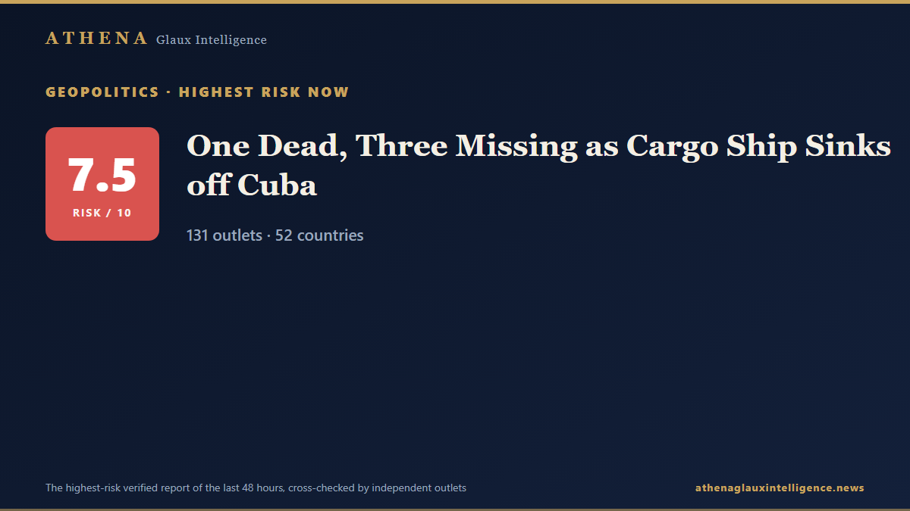
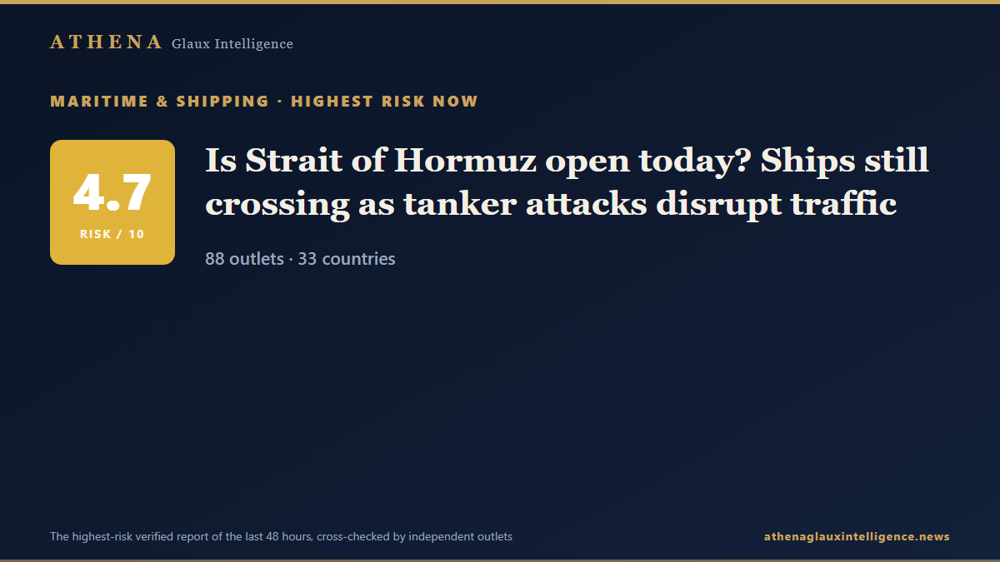
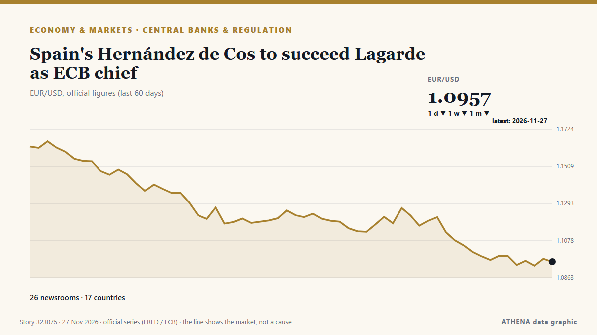

Κίνδυνος 7.5Αυξημένος
Γεωπολιτική, οικονομία και θαλάσσια ναυτιλία — διασταυρωμένα σε πολλές χώρες.
Γεωπολιτική
Όλη η Γεωπολιτική >Υψηλότερος κίνδυνος τώρα

Αυξανόμενος κίνδυνοςΑύξηση τις τελευταίες 24 ώρες
- Trump urges Putin to end 'military aggression' in EuropeΚίνδυνος 2.5 → 6.8
- Strobe Talbott, Who Led US Talks With India After Pokhran Tests, Dies At 80Κίνδυνος 0.0 → 4.5
- Guinea-Bissau's military leaders delay return to civilian rule until 2028Κίνδυνος 0.0 → 5.2
Ναυτιλία & ναυσιπλοϊα
Γραφείο Ναυτιλίας >Υψηλότερος κίνδυνος τώρα
Κίνδυνος 4.7Μέτριος
Is Strait of Hormuz open today? Ships still crossing as tanker attacks disrupt traffic
Δείτε τα στοιχεία ›
Πίνακας παρακολούθησηςΠεράσματα, λιμάνια και άλλες ναυτιλιακές αναφορές
- Strait of HormuzΔιαταραχήattack / strike · risk 6.6 · 140 newsrooms (72 h)
- Kerch Strait / Black SeaΔιαταραχήattack / strike · risk 7.5 · 134 newsrooms (72 h)
- SingaporeΔιαταραχήattack / strike · risk 6.6 · 140 newsrooms (72 h)
Κάθε είδηση, ελεγμένη σε πολλές χώρες.
Το ATHENA Glaux παρακολουθεί 742 ειδησεογραφικά μέσα σε όλο τον κόσμο. Μια είδηση γίνεται επαληθευμένο γεγονός μόνο όταν την αναφέρουν ανεξάρτητα μέσα. Κάθε γεγονός δείχνει ποιος το ανέφερε πρώτος και έναν βαθμό κινδύνου με τους λόγους του.
1.422γεγονότα σε 24 ώρες
742μέσα που παρακολουθούμε
43λεπτά ανάμεσα στις ενημερώσεις
Σεισμός ή πλημμύρα κοντά σας αυτή την εβδομάδα;
Γράψτε την πόλη σας και δείτε σεισμούς, πλημμύρες, καταιγίδες και επίσημες προειδοποιήσεις κοντά της, με λίστα κιτ έκτακτης ανάγκης 72 ωρών. Δωρεάν, χωρίς εγγραφή, και η περιοχή σας μένει στη συσκευή σας.
Αναφορές έρχονται από ανεξάρτητα μέσα — όταν δύο συναντηθούν στην ίδια ιστορία, γίνεται επιβεβαιωμένο γεγονός.
Πώς ελέγχει το ATHENA μια είδηση
- ΣυλλογήΟι αναφορές φτάνουν από ανεξάρτητα μέσα σε πολλές χώρες.
- ΑντιστοίχισηΌταν δύο μέσα συναντιούνται στην ίδια είδηση, γίνεται επαληθευμένο γεγονός.
- ΕξήγησηΚάθε γεγονός δείχνει ποιος ήταν πρώτος, πόσο εξαπλώθηκε και γιατί ο κίνδυνος είναι αυτός.
Παγκόσμια προοπτική κινδύνου
Εβδομαδιαίες και μηνιαίες επισκοπήσεις: τα γεγονότα υψηλότερου κινδύνου, οι τάσεις ανά τομέα και περιοχή και τι να παρακολουθήσετε.
Διαβάστε την προοπτική ›Ημερήσια ενημέρωση
Τα δέκα σημαντικότερα γεγονότα της ημέρας στον κόσμο, οι αυξανόμενοι κίνδυνοι και τα νέα γεγονότα, με κάθε αριθμό εξηγημένο.
Ανοίξτε τη σημερινή ενημέρωση ›
Οικονομία & ΑγορέςSpain's Hernández de Cos to succeed Lagarde as ECB chief
Spain's Pablo Hernández de Cos will be the next head of the European Central Bank, taking over from Christine Lagarde, diplomats told AFP on Thursday. από The Local Spain
6.1Σημασία
1.9Κίνδυνος · χαμηλός
91%Βεβαιότητα
Οι τίτλοι των ειδήσεων παρουσιάζονται στα αγγλικά, όπως δημοσιεύτηκαν.
Οικονομία & Αγορές
Trump demands probe into ‘fake’ US GDP figures
President Donald Trump called Thursday for an investigation into a routine revision of economic growth figures as he pushed his groundless claims of interference in the US midterm elections. από Vanguard
Γεωπολιτική
Iran denies involvement after 2 Italian technicians killed in attack on Kuwait site
Two Italians were killed in a drone attack in Kuwait on Thursday that Italy and Kuwait blamed on Iran, although Tehran has denied any involvement. από CBC News (alternative feed)
Χορηγούμενο
Cybernetics and Artificial Intelligence Lab Welcome to the Cybernetics and Artificial Intelligence Laboratory, established at the Department of Business Administration of the National and Kapodistrian University of Athens. The lab is headed by Professor Dimitrios Thomakos. The lab aims to do research that can be published in top venues. Our research uses tools and methods of Artificial Intelligence, and lies in the following areas: - Forecasting - Decision making - Cyber security - Finance We are always looking forward to collaborating with exceptional students!
Μάθετε περισσότερα – Cybernetics and Artificial Intelligence LabΠλοία στα θαλάσσια περάσματα τώρα
Ζωντανές μετρήσεις AIS. Πατήστε ή περάστε πάνω από μια μπάρα για λεπτομέρειες.
Τελευταίες αναφορές
Under-attack Palestinians find unlikely ally in Israeli retired general
Global fashion brands shift orders from Bangladesh to India amid unrest
Erdogan Ratifies Turkey-Saudi Arabia-Pakistan Defense Pact
Conflicts, El Nino Worsening Hunger — UN
Russian hybrid attacks could cause ‘mass casualty event’ in Europe, report warns
Hackers Breach US Air Force’s Flagship Cloud One Platform
US pushed Venezuela, Iraq to consider leaving OPEC: Sources
India-U.S. trade deal is close to culmination: Goyal
Γεωπολιτική
Ukraine says Benghazi drone attack not directed against Libya
Ukrainian Foreign Minister Andrii Sybiha said on Thursday that Kyiv's targeting of Russian ships in Benghazi was not directed at Libya itself. από The New Arab
Γεωπολιτική
Saudi-led coalition destroys 50 Iran-Backed Houthi military targets in Yemen
RIYADH, Nov 26: The Saudi-led coalition announced that it had carried out a precision military operation targeting the capabilities of Yemen's Houthi militia, destroying 50 militar... από Arab Times
Ενέργεια & Περιβάλλον
Macy's Thanksgiving Day Parade postponed due to weather for first time in 100 years
The 100th edition of the annual Macy's Thanksgiving Day Parade in New York City will be postponed for two days until Saturday due to forecasts of a major storm with high winds, marking the first time… από Tuoi Tre News
Γεωπολιτική, Πολιτική & Ασφάλεια
Περισσότερα ›Πόλεμοι & συγκρούσεις
Levski fans hurt amid violence in Marseille
Levski Sofia coach Julio Velazquez condemned the violent clashes between fans of Levski Sofia and Marseille ahead of their Europa League game, calling them ‘unacceptable for football.’ The incidents… από Arab News
- Εκλογές & πολιτική
New Zealand's ruling coalition loses majority in final election count
- Πόλεμοι & συγκρούσεις
Key Russian oil hub on fire after drone attack – video, photos
- Πόλεμοι & συγκρούσεις
UK tells 100,000 military reservists to prepare for possible war call-up: Report
- Εκλογές & πολιτική
Macron accuses Le Pen of 'arrogance' in EU budget clash
Οικονομία, Χρηματοοικονομικά & Αγορές
Περισσότερα ›Τράπεζες & πίστη
EU leaders struggle to agree on long-term budget, $49bn Ukraine loan
The bloc is holding an extraordinary summit in Brussels to discuss its budget proposal for 2028 to 2034. από Al Jazeera English
- Κρυπτονομίσματα & ψηφιακά στοιχεία
‘An epic fail’: Crypto world blasts Netflix’s ‘The Altruists’ for turning SBF’s crimes into a love story
- Τράπεζες & πίστη
Best Black Friday SSD deals 2026
- Τράπεζες & πίστη
Lula picks banker Luiz Carlos Trabuco to run the Finance Ministry in his fourth term
- Τράπεζες & πίστη
Malaysia wants priority over other lenders if it backs AirAsia
Εμπόριο, Βιομηχανία & Υποδομές
Περισσότερα ›Δασμοί & έλεγχοι εξαγωγών
Sheinbaum criticizes DEA hotline to report corrupt Mexican officials
Mexican President Claudia Sheinbaum on Thursday criticized a move by U.S. officials to set up a hotline for reporting Mexican government corruption. από UPI World News
- Αερομεταφορές, σιδηρόδρομος & οδικές
Powerful Storm Disrupts US Thanksgiving, Leaves Over 900,000 Without Power
- Αερομεταφορές, σιδηρόδρομος & οδικές
Norwegian Norse Atlantic airline files for bankruptcy
- Δασμοί & έλεγχοι εξαγωγών
Five takeaways from Trump’s new tariffs
- Ναυτιλία & λιμάνια
Global maritime trade set for zero growth in 2026
Ενέργεια, Πόροι & Περιβάλλον
Περισσότερα ›ΑΠΕ & αποθήκευση
Envision Energy partners with Greensteel Australia on 400 MW Green Hydrogen System for low-carbon steelmaking
Envision Energy, a global leader in green technology announced a strategic partnership with Greensteel Australia, the Australian-owned company building the. από Cyprus Shipping News
- Πετρέλαιο & φυσικό αέριο
US Supports Iraqi Presiden't Efforts To Curb Oil Smuggling: Trump
- Ρύπανση & βιοποικιλότητα
Thailand Tests Find High Lead, Arsenic in River Shellfish
- Ακραία καιρικά & φυσικές καταστροφές
Major storm batters US on Thanksgiving holiday
- Πετρέλαιο & φυσικό αέριο
Qatar LNG exports hit highest level since U.S.-Iran war began, Bloomberg reports
Τεχνολογία, ΤΝ & Κυβερνοασφάλεια
Περισσότερα ›Τεχνητή νοημοσύνη
SAP weighs cutting at least 10,000 positions in AI restructuring
SAP is weighing at least 10,000 job cuts as it reshapes its software business around AI, with product, engineering and sales among the departments under review. από Business Standard
- Επεξεργαστές & υπολογιστική
Bitcoin price drops below $59K as Anthropic joins tech stock rebound
- ΜΜΕ & παραπληροφόρηση
French far-right leader Bardella faces fresh anti-Semitism accusations in media reports
- Κυβερνοασφάλεια
UK benefits department hit by cyber incident, takes services offline
- Κυβερνοασφάλεια
Global news agency AFP reports cyberattack, shuts down content platform
Επιχειρήσεις, Εταιρείες & Επενδύσεις
Περισσότερα ›Εταιρική στρατηγική
New growth drivers fuel China's industrial profit gains
China industrial profits, October Year-to-date: 16.0% y/y prior (jany - September) 15.5% October alone: 20.1% y/y prior 14.4% Profit growth at China's industrial firms accelerated sharply in October… από investingLive (ForexLive)
- Κλάδοι & εταιρικοί κίνδυνοι
These $297 Meta Quest 3S Black Friday deals come with a $50 gift card
- Πτωχεύσεις & αναδιαρθρώσεις
6 new Negri Sembilan exco members appointed
- Επενδύσεις
Mnangagwa in Kenya for inaugural Bi-National Commission as Nairobi, Harare seek to boost trade
- Εταιρική στρατηγική
Petronas Greenlights Suriname's 1st Offshore Gas Project
Δυστυχήματα & έκτακτες ανάγκες
Περισσότερα ›Δυστυχήματα & έκτακτες ανάγκες
Blackouts and floods fail to derail Sabah’s 42,808 SPM candidates
KOTA KINABALU, Nov 27 — All 42,808 candidates sitting for the Sijil Pelajaran Malaysia (SPM) examination in Sabah since... από Malay Mail
- Δυστυχήματα & έκτακτες ανάγκες
Death toll in Pakistan building collapse rises to 8 with about 10 missing
- Δυστυχήματα & έκτακτες ανάγκες
Egyptian authorities arrest motorist over tanker crash that killed 31
- Δυστυχήματα & έκτακτες ανάγκες
Hisham Talaat Moustafa, Ahmed Ezz, Yassin Mansour donate EGP 30m to families of Ring Road accident victims
- Δυστυχήματα & έκτακτες ανάγκες
Ukrainian man in critical condition after setting himself on fire in central Warsaw
Τρεις τρόποι να διαβάσετε σήμερα
Ξεκινήστε από αυτόν που ταιριάζει στον χρόνο σαςΕπαληθευμένα γεγονότα
Κατά σειρά έκτασης της κάλυψης
- Binance lifts withdrawal suspension after $6.3 billion crypto heist135 μέσα · 53 χώρεςΚίνδυνος 3.5
- Trump Says Iran Still Has a Chance to Make a Deal139 μέσα · 49 χώρεςΚίνδυνος 6.6
- Drone Strikes Kill 2 in Kursk and Bryansk Regions Amid Overnight Attacks58 μέσα · 33 χώρεςΚίνδυνος 6.9
- Pakistan set to host talks with Saudi Arabia and Turkey under trilateral defense pact72 μέσα · 31 χώρεςΚίνδυνος 3.8
- Trump Says Putin Is Welcome to Attend December G20 Summit in Florida65 μέσα · 30 χώρεςΚίνδυνος 4.4
Γραφείο Αξιολόγησης
Κάντε μια ερώτηση και διαβάστε τεκμηριωμένη αξιολόγηση μιας βασικής είδησης, μαζί με το τι θα την διέψευδε.
Ανοίξτε το Γραφείο Αξιολόγησης ›Η σημερινή εικόνα
| 19:00 | 588 |
|---|---|
| 20:00 | 1285 |
| 21:00 | 1465 |
| 22:00 | 990 |
| 23:00 | 583 |
| 00:00 | 523 |
| 01:00 | 441 |
| 02:00 | 237 |
| 03:00 | 126 |
| 04:00 | 229 |
| 05:00 | 153 |
| 06:00 | 154 |
| 07:00 | 306 |
| 08:00 | 332 |
| 09:00 | 261 |
| 10:00 | 735 |
| 11:00 | 280 |
| 12:00 | 578 |
| 13:00 | 358 |
| 14:00 | 454 |
| 15:00 | 365 |
| 16:00 | 457 |
| 17:00 | 335 |
| 18:00 | 651 |
Κίνδυνος των σημερινών γεγονότων
Γεωπολιτική83Οικονομία & Αγορές36Εμπόριο & Βιομηχανία36Επιχειρήσεις22Ενέργεια & Περιβάλλον19Τεχνολογία & Κυβερνοασφάλεια17Ναυτιλία2
Αναδυόμενα σήματα
- Απότομη αύξηση · Ενεργό τώραPakistan and Saudi Arabia
- Απότομη αύξηση · Ενεργό τώραOfficial Gazette
- Νέο όνομα στις ειδήσεις · Ενεργό τώραSharon Otieno
- Απότομη αύξηση · Ενεργό τώραLe Pen
- Απότομη αύξηση · Ενεργό τώραUS East Coast
Επίσημες προειδοποιήσεις
- M 6.5 - Vanuatu regionM6.5 · USGS ·
- M 5.9 - 238 km SW of Yanglong, ChinaM5.9 · PAGER yellow · USGS ·
Μείνετε ενημερωμένοι
ATHENA Weekly Risk Picture
Οι μεγαλύτεροι γεωπολιτικοί, οικονομικοί και ναυτιλιακοί κίνδυνοι της εβδομάδας, διασταυρωμένοι και βαθμολογημένοι.
Κάθε Παρασκευή στις 08:00 ώρα Ελλάδας · δωρεάν · στα αγγλικά
Δωρεάν εγγραφήΤο ATHENA στο Telegram
Οι ειδήσεις τη στιγμή που δημοσιεύονται: έκτακτα γεγονότα με κίνδυνο 6 ή περισσότερο, ωριαία σύνοψη, ενημερώσεις κινδύνου και η ημερήσια ενημέρωση στις 10:00.
Δωρεάν · αναρτήσεις στα αγγλικά · αποχωρείτε όποτε θέλετε
Είσοδος στο κανάλιΤην εγγραφή τη διαχειρίζεται η beehiiv με διπλή επιβεβαίωση: τίποτα από όσα πληκτρολογείτε δεν αποστέλλεται στο ATHENA, και κάθε τεύχος έχει σύνδεσμο διαγραφής.
Παρακολούθηση κινδύνων
Περισσότερα ›Στενά του ΟρμούζΚίνδυνος 5.312 νέα αυτή την εβδομάδα · μείωση από 17 την προηγούμενη εβδομάδαΕρυθρά ΘάλασσαΚίνδυνος 7.415 νέα αυτή την εβδομάδα · μείωση από 44 την προηγούμενη εβδομάδαΕλληνοτουρκικάΚίνδυνος 0.97 νέα αυτή την εβδομάδα · περίπου όσα και την προηγούμενη εβδομάδαΚύπροςΚίνδυνος 3.614 νέα αυτή την εβδομάδα · μείωση από 18 την προηγούμενη εβδομάδαΚυρώσεις κατά της ΡωσίαςΚίνδυνος 5.315 νέα αυτή την εβδομάδα · περίπου όσα και την προηγούμενη εβδομάδαΠόλεμος στην ΟυκρανίαΚίνδυνος 7.5212 νέα αυτή την εβδομάδα · μείωση από 272 την προηγούμενη εβδομάδαΜέση Ανατολή: Ισραήλ – ΓάζαΚίνδυνος 7.071 νέα αυτή την εβδομάδα · μείωση από 86 την προηγούμενη εβδομάδαΤαϊβάνΚίνδυνος 4.610 νέα αυτή την εβδομάδα · μείωση από 13 την προηγούμενη εβδομάδαΠετρέλαιο και φυσικό αέριοΚίνδυνος 2.135 νέα αυτή την εβδομάδα · περίπου όσα και την προηγούμενη εβδομάδαΔιώρυγα του ΣουέζΚίνδυνος 0.00 νέα αυτή την εβδομάδα · μείωση από 3 την προηγούμενη εβδομάδαΣτενά του ΒοσπόρουΚίνδυνος 0.00 νέα αυτή την εβδομάδαΔιώρυγα του ΠαναμάΚίνδυνος 0.01 νέα αυτή την εβδομάδα · αύξηση από 0 την προηγούμενη εβδομάδαΣκιώδης στόλοςΚίνδυνος 0.01 νέα αυτή την εβδομάδα · μείωση από 3 την προηγούμενη εβδομάδαΝαυσιπλοΐα στη Μαύρη ΘάλασσαΚίνδυνος 0.00 νέα αυτή την εβδομάδα · μείωση από 5 την προηγούμενη εβδομάδαΚεντρικές τράπεζες και επιτόκιαΚίνδυνος 4.249 νέα αυτή την εβδομάδα · περίπου όσα και την προηγούμενη εβδομάδαΕλληνική οικονομίαΚίνδυνος 1.37 νέα αυτή την εβδομάδα · περίπου όσα και την προηγούμενη εβδομάδαΕνέργεια στην Ανατολική ΜεσόγειοΚίνδυνος 0.03 νέα αυτή την εβδομάδα · περίπου όσα και την προηγούμενη εβδομάδαΒαλκάνιαΚίνδυνος 4.917 νέα αυτή την εβδομάδα · μείωση από 22 την προηγούμενη εβδομάδαΜεταναστευτικό στη ΜεσόγειοΚίνδυνος 3.82 νέα αυτή την εβδομάδα · μείωση από 3 την προηγούμενη εβδομάδα
Παγκόσμιοι κίνδυνοι — εβδομάδα 48, 2026 (23–29 Νοε) ›
Ανά τον κόσμο
ΕυρώπηMPs to be given first vote on Andy Burnham’s new EU deal next month
60 γεγονότα
Νοτιοανατολική ΑσίαTrump says trade deal reached between the U.S. and the Philippines
58 γεγονότα
Βόρεια ΑμερικήTrump’s Nvidia Shares Gained Up to $14.8M After Huang’s Return
58 γεγονότα
Μέση Ανατολή & Βόρεια ΑφρικήPakistan set to host talks with Saudi Arabia and Turkey under trilateral defense pact
57 γεγονότα
Νότια Ασία‘What pressure?’: Salahuddin on Hasina’s reported plan to return on December 16
56 γεγονότα
Ανατολική ΑσίαS. Korean won strengthens against U.S. dollar on foreign inflows
45 γεγονότα
Υποσαχάρια ΑφρικήNvidia Blackwell chips found at China data center linked to Alice Huang: Report
45 γεγονότα
Ρωσία & ΕυρασίαRussian Drone Strikes Kill Utility Workers in Kramatorsk
40 γεγονότα
Λατινική Αμερική & ΚαραϊβικήHuawei found guilty in trade secrets theft case
32 γεγονότα